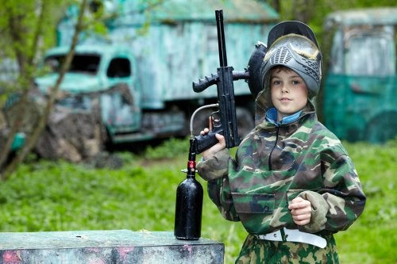

Existe una edad mínima que debe respetarse. En este sentido, se trata de una actividad que, además de divertida, es segura.
El paintball no solo es una actividad ideal para los niños, sino también para toda la familia. Lo más importante es contar con toda la indumentaria y herramientas necesarias para disfrutar de este juego de forma sana y, sobre todo, segura
Para comenzar, es fundamental prestar atención a las normas básicas de esta actividad en cuanto a la edad mínima permitida, las reglas de juego y demás implementos.
Además, a diferencia de otro tipo de juegos, el paintball tiene como objetivo ofrecer una visión menos belicista; el campo de juego no debe tener muchas connotaciones que inciten a la violencia o a la guerra en sí.
Cabe mencionar que en algunos campos existe un modo llamado Paintball Kids
El cual destaca en ser un modo especial con equipamiento direccionado especialmente para los niños
por lo tanto, paintball kids es una modalidad de paintball especial en la que los jugadores usan un equipo especial de paintball que hace que el juego sea mas seguro, confortable y divertido, minimizando al máximo los riesgos de impactos tanto cercanos cómo lejanos, excesivamente dolorosos para los pequeños.
Otra ventaja de jugar paintball kids, es que pueden jugar adultos y niños juntos, ya que todos utilizaran el equipo especial para niños. Permitiendo así que la familia pueda pasar un rato diferente y divertirse juntos.